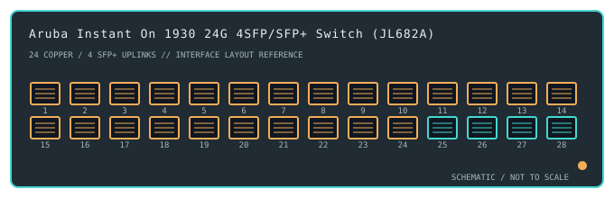

[ MODEL-SPECIFIC NETWORK HARDWARE ]
Aruba Instant On 1930 24G 4SFP/SFP+ Switch (JL682A)
A 24-port Gigabit copper smart-managed access switch with four 1/10GbE SFP+ uplinks; this JL682A SKU is the non-PoE model.

IDENTIFICATION: Confirm the complete product label and hardware revision before applying power, firmware or transceiver assumptions. Link and fabric rates below are nominal vendor specifications, not test results.
Detailed specifications and compatibility
| Subcategory | Managed switches |
|---|---|
| Exact product and model | Aruba Instant On 1930 24G 4SFP/SFP+ Switch (JL682A) |
| Ports / physical interface | 24 × 10/100/1000BASE-T RJ-45 access ports and 4 × SFP/SFP+ uplink cages supporting 1GbE or 10GbE optics as documented. The cages are separate uplinks, not copper combo ports. |
| Bus and host connection | Standalone 1U rack/desktop Ethernet switch with external network hosts attached over copper Ethernet or supported SFP/SFP+ modules; no computer expansion-bus card or host NIC driver. |
| Nominal switching performance | Manufacturer-listed 128Gb/s switching capacity and 95.23Mpps forwarding rate. These are fabric specifications, not a measured application-throughput result. |
| Power over Ethernet | No PoE output on JL682A. It cannot power access points or phones; PoE models in the 1930 family use different part numbers. |
| Management and software | Aruba Instant On cloud/mobile management or local web management; Layer 2 smart-managed functions include VLANs, link aggregation and QoS, subject to software release. |
| Power and physical form | Internal AC power and 1U rack-mount form factor. Provide grounded mains power and airflow; check the chassis label and region-specific supply before installation. |
| Compatibility | Use Cat 5e or better copper cabling for 1GbE and supported 1/10GbE SFP/SFP+ optics with matching fiber type and wavelength. Configure VLANs consistently at peers; management access requires a supported browser or Instant On account/app. |
| Variant identification | JL682A denotes the 24G 4SFP/SFP+ non-PoE model. Do not substitute the JL683A/JL684A PoE variants or 48-port JL685A/JL686A when applying port, power, or PoE specifications. |
| Measured throughput | No physical sample was benchmarked for this record. Nominal line rate and switching-fabric ratings are not measured application throughput. |
Revision-specific use notes
JL682A denotes the 24G 4SFP/SFP+ non-PoE model. Do not substitute the JL683A/JL684A PoE variants or 48-port JL685A/JL686A when applying port, power, or PoE specifications.
Use Cat 5e or better copper cabling for 1GbE and supported 1/10GbE SFP/SFP+ optics with matching fiber type and wavelength. Configure VLANs consistently at peers; management access requires a supported browser or Instant On account/app.
Aruba Instant On cloud/mobile management or local web management; Layer 2 smart-managed functions include VLANs, link aggregation and QoS, subject to software release.
Archival, ESD and preservation notes
Record the full SKU and hardware revision, serial/date code, firmware release, supply label, installed transceiver identifiers and physical port test results. Keep configuration backups free of credentials and private network details.
Disconnect mains and attached PoE loads before service. Keep optics capped and store transceivers separately with their wavelength, fiber mode and part number recorded.
Manufacturer sources
- Aruba Instant On 1930 Series product informationManufacturer product or model-specific technical documentation. Verify the exact SKU, hardware revision, region and firmware.
- Aruba Instant On 1930 Series technical datasheet (PDF)Manufacturer product or model-specific technical documentation. Verify the exact SKU, hardware revision, region and firmware.
Confirm the source's revision/region applicability against the item label. Manufacturer link rates and capacity ratings are not measurements of application-level throughput.